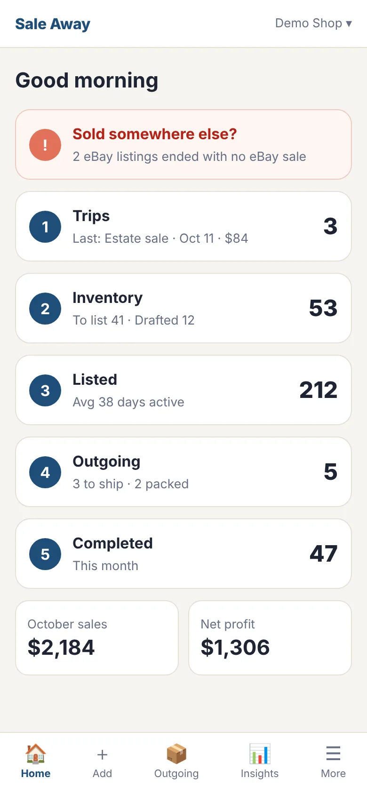
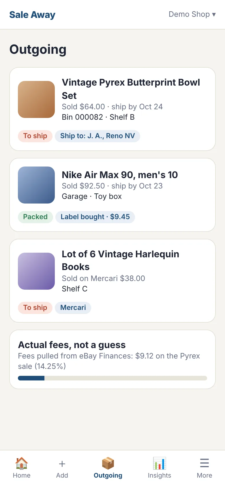
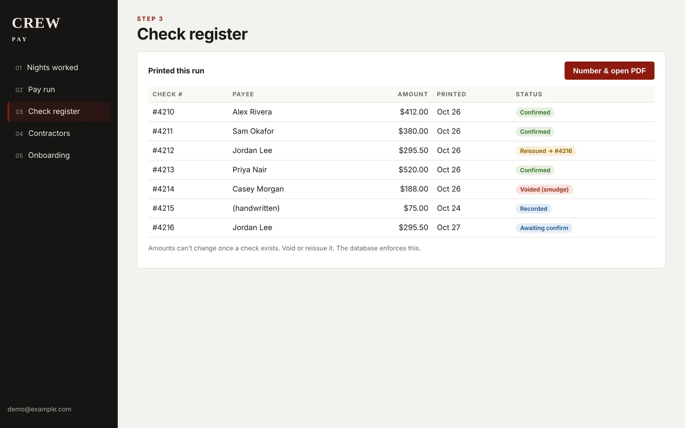
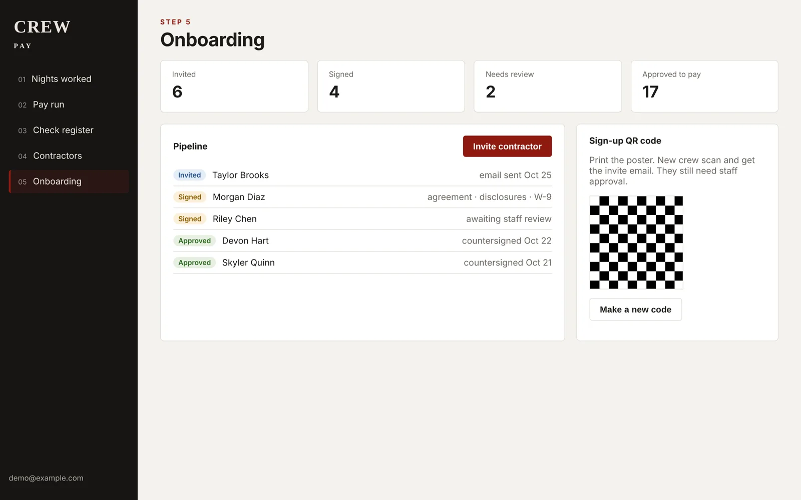
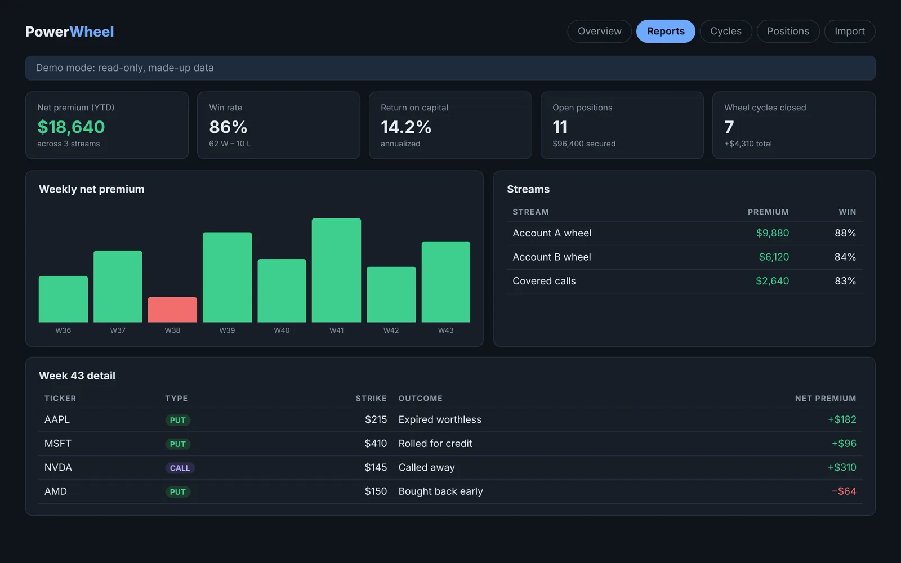
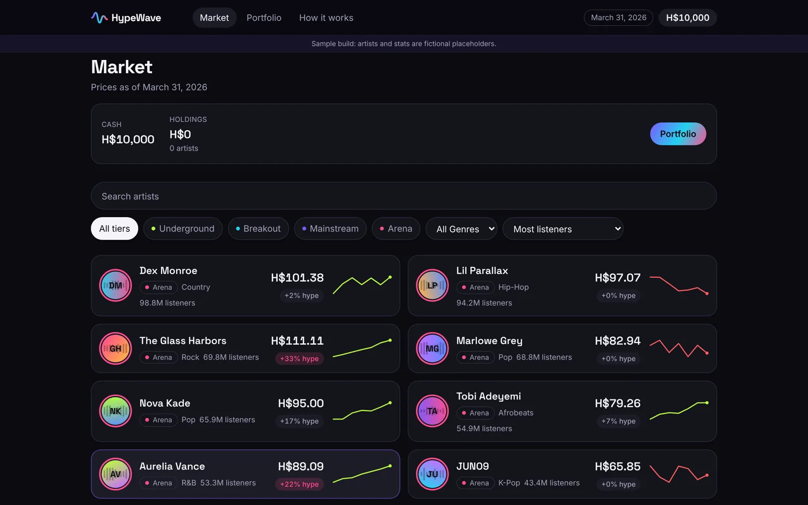

Sale Away With Me
A phone-first app that replaced a reseller's Excel tracker and copy-paste routine with one place to log, list, ship and reconcile what she sells.
What I did
- Mapped her 16-step manual routine to app features and wrote a 5-phase plan with an approval gate between each phase.
- Set the baseline to beat: 446 of 498 sales in 2026 needed a manual fee fix under her old flat-rate estimate.
- Shipped intake with photos, an AI listing assistant, eBay order sync, actual-fee reconciliation, and one-tap listing.
Decisions I'm proud of
- eBay is updated before saving, so a refusal leaves nothing half-done.
- Mock, sandbox and live eBay modes are kept strictly separate.
- Unique SKUs, so a repost can never overwrite a live listing.
- Unknown values stay blank, never zero.


Mock screens with made-up data.
Crew Pay
Pays a seasonal haunt's contractors: record who worked each night, approve a pay run, print checks on pre-numbered stock, and onboard new crew with signed paperwork.
What I did
- Replaced a spreadsheet-and-old-portal process with one pay run flow.
- Check numbers always match the paper stock, with void, reissue, handwritten and spoiled-form handling.
- Invite-based onboarding: agreement, disclosures and a W-9, signed online, reviewed by staff, then countersigned.
- QR-code self sign-up, plus migration and reconcile scripts to load the season so far.
Decisions I'm proud of
- Once a check exists its amount can't change. The database enforces it, not just the screen.
- Tax IDs live only in the signed W-9 PDF in a private bucket.
- Document text is versioned, so signed paperwork always matches the exact wording signed.


Mock screens with made-up names and amounts, restyled generically.
PowerWheel
Tracks and reports on an options "wheel" strategy across brokerage accounts: premiums, rolls, assignments, and how each wheel cycle actually paid.
What I did
- Wrote the PRD, then parked the AI-forecasting ideas and shipped tracking and reporting first.
- Defined the win/loss rules: a trade scores on net premium, assigned trades are marked against the stock's close, and wheel cycles are the authority on dollars.
- Built a read-only broker sync and a CSV importer so other people can use it.
How I checked it
- Weekly realized P&L compared to the broker's own figures.
- CSV import compared to the order sync: contract counts matched exactly, P&L within about 1–3%.
- Money math lives in database triggers, not scattered across screens.

Mock screen with made-up data. The live demo has been retired.
HypeWave
A market concept where fans buy and sell shares in music artists. Prices track real audience growth plus player demand. Concept and play-money prototype only; not a live product.
What I did
- A 775-line PRD: market design, fairness rules, listing lifecycle, architecture, money and legal options, roadmap.
- A working "time capsule" prototype: start with play money in March, fast-forward to September, see who you called right.
Design thinking
- Price = a stats-based base value times a hype multiplier, so being right early pays and pump-and-dumps unwind.
- Fairness by construction: per-artist buy limits, stake caps, and cash-out scoring so you can't pump your own score.
- The pricing math is unit-tested against the PRD's worked example.
